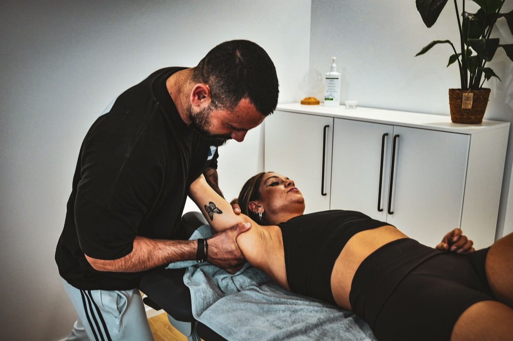
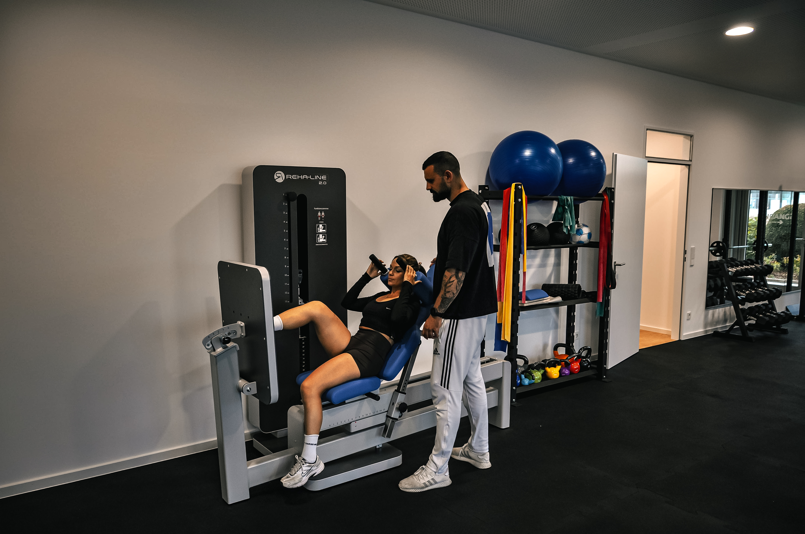
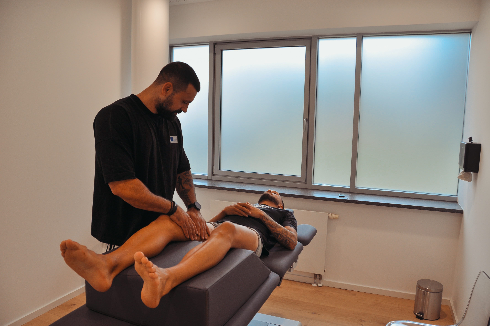
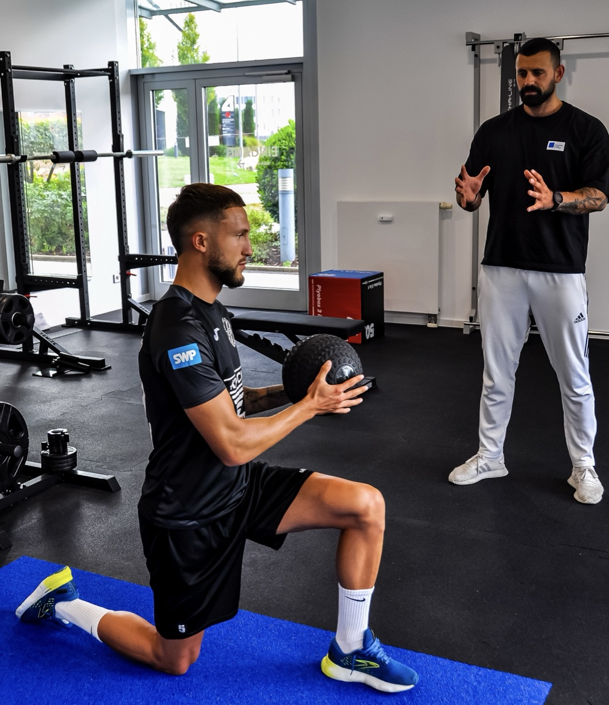
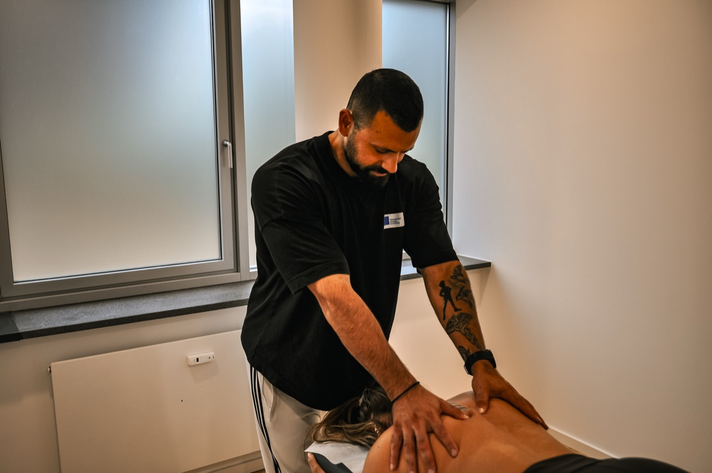
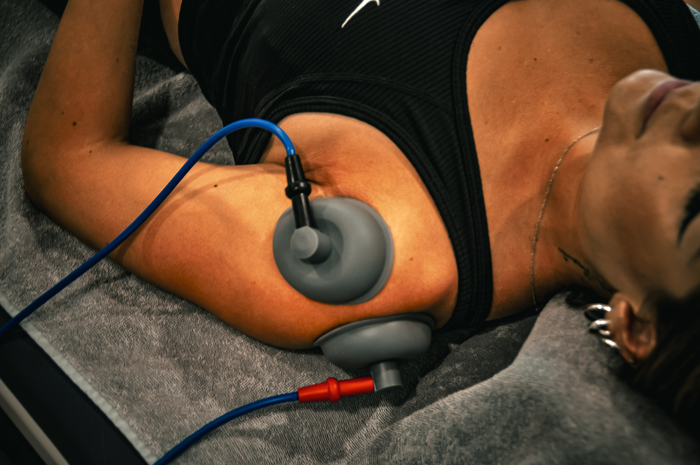
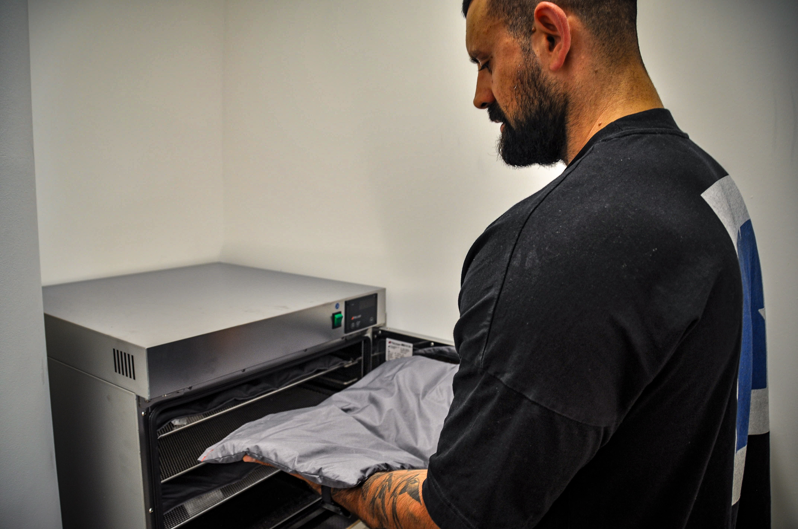
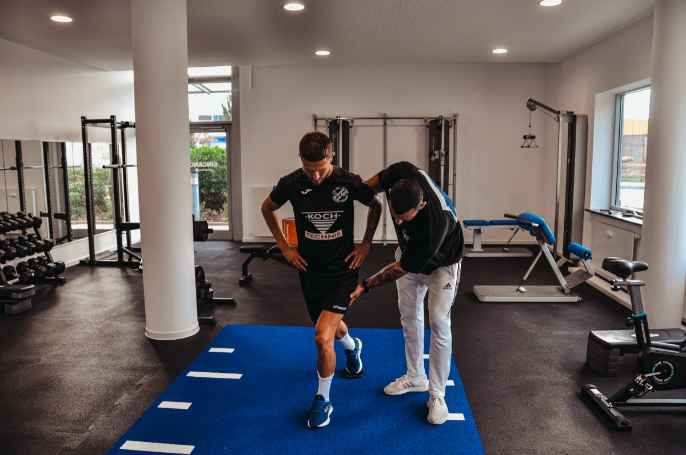
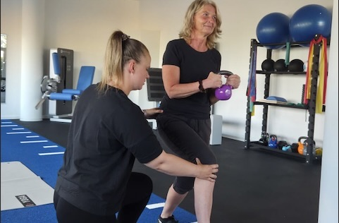

Bei der Manuellen Therapie werden Funktionsstörungen des Bewegungsapparates gezielt behandelt. Durch spezielle Handgriffe und Mobilisationstechniken wird die Beweglichkeit verbessert und Schmerzen gelindert.

Diese Therapieform kombiniert klassische Krankengymnastik mit modernen Trainingsgeräten. Ziel ist es, Muskeln gezielt aufzubauen, die Stabilität zu erhöhen und die Beweglichkeit nachhaltig zu verbessern.

Die manuelle Lymphdrainage ist eine sanfte Massagetechnik, die den Abtransport von Flüssigkeit im Gewebe unterstützt. Sie wird besonders bei Schwellungen, nach Operationen oder bei Lymphödemen eingesetzt.

In der Krankengymnastik werden individuelle Übungen zur Verbesserung von Beweglichkeit, Kraft und Koordination durchgeführt. Ziel ist es, Beschwerden zu lindern und die Funktion des Bewegungsapparates zu fördern.

Die klassische Massagetherapie dient der Lockerung verspannter Muskulatur und fördert die Durchblutung. Sie wird oft zur Entspannung, Schmerzlinderung und als Ergänzung zu physiotherapeutischen Maßnahmen eingesetzt.

Hierbei werden gezielt elektrische Impulse eingesetzt, um die Muskulatur zu stimulieren, Schmerzen zu lindern und die Durchblutung zu fördern. Diese Therapie eignet sich besonders zur Unterstützung bei Muskelverspannungen und Nervenirritationen.

Die Wärmetherapie nutzt die heilende Wirkung von Wärme, um die Muskulatur zu entspannen und die Durchblutung anzuregen. Häufig wird sie in Kombination mit anderen Therapien angewendet, um die Behandlung zu unterstützen.

Diese Testung dient dazu, die Belastbarkeit und Leistungsfähigkeit nach Verletzungen zu überprüfen. So wird sichergestellt, dass der Wiedereinstieg in Sport oder Alltag sicher und sinnvoll erfolgen kann.

Die KGZNS richtet sich an Menschen mit neurologischen Erkrankungen wie Schlaganfall, Multiple Sklerose oder Parkinson. Durch gezielte Übungen werden Bewegungsabläufe neu erlernt, die Koordination verbessert und die Selbstständigkeit im Alltag gefördert.
“⭐️⭐️⭐️⭐️⭐️”
“⭐️⭐️⭐️⭐️⭐️”
“⭐️⭐️⭐️⭐️⭐️”
“⭐️⭐️⭐️⭐️⭐️”
“⭐️⭐️⭐️⭐️⭐️”
“⭐️⭐️⭐️⭐️⭐️”